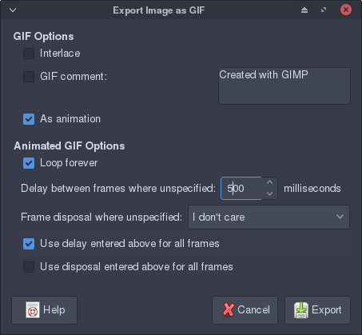

Creating a character sprite¶
Following on from the last tutorial,
we’re going to create a simple
AnimatedSprite to act
as our player character in the game we’re going to create.
If you already have a GIF of a player sprite, great! You don’t need to create a new one, you can just skip to the next tutorial.
To start off, open the image editor of your choice (we’ll be using GIMP in this example), and create a new image which is 10x10 pixels, the same size as the tiles in our tilesheet. Note that it doesn’t have to be that size, it can be any size you want, but 10x10 pixels is enough for a simple sprite.
As before, delete the background layer, leaving us a transparent canvas to work on, and create a layer to work on.
For the sake of the tutorial, let’s create a small blob that will bob up and down. Start off by drawing the outline, a circle will do. Fill it with whatever color you like, and draw some eyes on it. I’m going for blue with green eyes, and a blush, because let’s face it, we want our character to be cute.
Here’s what we have so far:
Now to add the second frame. We already have everything drawn on our first layer, so let’s duplicate the layer we have already and move the top of the character’s head down, removing the extra pixels on the side. That leaves our second frame looking like this:
Now comes exporting it as a GIF. GIMP makes this easy - because we have our two frames on different layers, it’s as simple as going to the export menu and naming it “sprite.gif”. You’ll get this dialog pop up:
In this dialog, you want to tick the “As animation” box, set the delay to however long you want the sprite to take to move (in the example, I’ve set it to 500 milliseconds, that is, half a second), and tick the “Use delay entered above for all frames” box. Hit the export button and presto, you have an animated sprite!
We’re now ready to move on and create a game with our character sprite, and our tilesheet and map from the earlier tutorial!